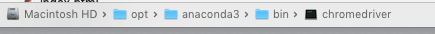
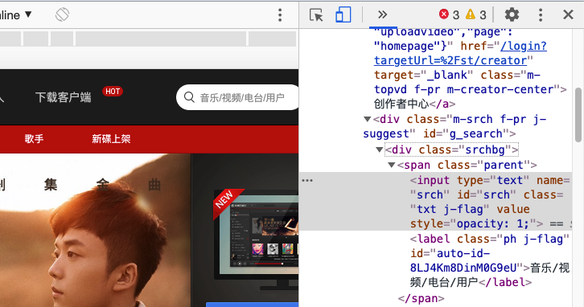

使用Selenium操纵浏览器¶
王成军

Selenium 是一套完整的web应用程序测试系统，包含了
测试的录制（selenium IDE）
编写及运行（Selenium Remote Control）
测试的并行处理（Selenium Grid）。
Selenium的核心Selenium Core基于JsUnit，完全由JavaScript编写，因此可以用于任何支持JavaScript的浏览器上。selenium可以模拟真实浏览器，自动化测试工具，支持多种浏览器，爬虫中主要用来解决JavaScript渲染问题。https://www.cnblogs.com/zhaof/p/6953241.html
上面我们知道了selenium支持很多的浏览器，但是如果想要声明并调用浏览器则需要： https://pypi.org/project/selenium/
pip install -U selenium
Requirement already up-to-date: selenium in /opt/anaconda3/lib/python3.7/site-packages (3.141.0)
Requirement already satisfied, skipping upgrade: urllib3 in /opt/anaconda3/lib/python3.7/site-packages (from selenium) (1.25.8)
Note: you may need to restart the kernel to use updated packages.
Webdriver¶
主要用的是selenium的Webdriver
我们可以通过下面的方式先看看Selenium.Webdriver支持哪些浏览器
from selenium import webdriver
help(webdriver)
Help on package selenium.webdriver in selenium:
NAME
selenium.webdriver
DESCRIPTION
# Licensed to the Software Freedom Conservancy (SFC) under one
# or more contributor license agreements. See the NOTICE file
# distributed with this work for additional information
# regarding copyright ownership. The SFC licenses this file
# to you under the Apache License, Version 2.0 (the
# "License"); you may not use this file except in compliance
# with the License. You may obtain a copy of the License at
#
# http://www.apache.org/licenses/LICENSE-2.0
#
# Unless required by applicable law or agreed to in writing,
# software distributed under the License is distributed on an
# "AS IS" BASIS, WITHOUT WARRANTIES OR CONDITIONS OF ANY
# KIND, either express or implied. See the License for the
# specific language governing permissions and limitations
# under the License.
PACKAGE CONTENTS
android (package)
blackberry (package)
chrome (package)
common (package)
edge (package)
firefox (package)
ie (package)
opera (package)
phantomjs (package)
remote (package)
safari (package)
support (package)
webkitgtk (package)
VERSION
3.14.1
FILE
/opt/anaconda3/lib/python3.7/site-packages/selenium/webdriver/__init__.py
下载和设置Webdriver¶
对于Chrome需要的webdriver下载地址，一定要确保版本正确。
http://chromedriver.storage.googleapis.com/index.html
需要将webdriver放在系统路径下：
比如,把下载的webdriver 放在
Anaconda的bin文件夹下

访问页面¶
from selenium import webdriver
browser = webdriver.Chrome()
browser.get("http://music.163.com")
print(browser.page_source)
#browser.close()
<html><head>
<meta charset="utf-8">
<meta name="baidu_ssp_verify" content="39f14c78c537175eb4b5192c72d002c1">
<meta name="baidu-site-verification" content="cNhJHKEzsD">
<meta name="360-site-verification" content="e37aef53e3922913e2a6a4682e479b84">
<meta name="sogou_site_verification" content="7zFjYjJaMq">
<meta name="msvalidate.01" content="0CA3171633345524D8CBED5E95C75FFF">
<meta name="google-site-verification" content="rh2irYN2Lu028orAseOD3aXd5u7Eu1mqTfhoVaw2Ihg">
<meta name="shenma-site-verification" content="12da4afc02bfe908ed0667f287167d11_1555581349">
<meta property="qc:admins" content="27354635321361636375">
<link rel="canonical" href="https://music.163.com/">
<meta name="applicable-device" content="pc,mobile">
<title>网易云音乐</title>
<meta name="keywords" content="网易云音乐，音乐，播放器，网易，下载，播放，DJ，免费，明星，精选，歌单，识别音乐，收藏，分享音乐，音乐互动，高音质，320K，音乐社交，官网，music.163.com">
<meta name="description" content="网易云音乐是一款专注于发现与分享的音乐产品，依托专业音乐人、DJ、好友推荐及社交功能，为用户打造全新的音乐生活。">
<meta property="og:title" content="网易云音乐">
<meta property="og:type" content="website">
<meta property="og:image" content="http://p3.music.126.net/tBTNafgjNnTL1KlZMt7lVA==/18885211718935735.jpg">
<meta property="og:url" content="https://music.163.com/">
<meta property="og:site_name" content="网易云音乐">
<script type="text/javascript">
var GDownloadLink="";
var GDevice = "phone";
var GFrom="";
var GClient="";
var GPlatform="other";
var GRef = '';
var GInApp = false;
var GMobile = false;
var GAbroad = false;
var GUser={};
var GAllowRejectComment = false;
var GEnc = true;
var GEnvType = "online";
var GWebpSupport = "1";
var vipWebCashierRedirect = "1"
window.NEJ_CONF = {p_csrf:{cookie:'__csrf',param:'csrf_token'}};
GUtil = {
getBase:function(){
return location.protocol+'//'+location.hostname;
},
getPathAndHash:function(_url){//获取URL path 之后的所有内容,并将/#/替换成/m/使之成为path的一部分
if(!_url) return '';
var _reg0 = /^https?:\/\/.*?\//i,
_reg1 = /\/?#\/?/i;
return _url.replace(_reg0,'/').replace(_reg1,'/m/');
},
composeRefer:function(_url,_ref){//对所有的页面请求都加上ref参数表示被嵌套的来源
if(!_ref) return _url;
var _hi = _url.indexOf('#'),
_si = _url.indexOf('?');
if(_si>0&&(_si<_hi||_hi<0)){
return _url.substring(0,_si+1)+'ref='+_ref+'&'+_url.substring(_si+1);
}else if(_hi>0&&(_si<0||_si>_hi)){
return _url.substring(0,_hi)+'?ref='+_ref+_url.substring(_hi);
}else{
return _url+'?ref='+_ref;
}
}
};(function(){
var _ua = window.navigator.userAgent,
_isMobile = /(mobile|mobi|wap|iphone)/i.test(_ua),
_isAndroid = /android/i.test(_ua),
_isIpad = /(ipad)/i.test(_ua),
_igList = [/^\/xiami$/,/^\/live$/],//不需要以单页面打开的列表，比如某些活动页面
_pn = location.pathname,
_ydomainPath = ['home', 'activity','album','artist','djradio','radio','dj','login','mv','playlist','program','song','tiktoksong', 'uniplaylist','unisong','user','video','event','discover/toplist','user/home'],
_idx = _pn.lastIndexOf('/'),
_pReg = /\s*(\w+)\s*=\s*(\d+)\s*/,
_isOnCDN = function(type) {
return _ydomainPath.indexOf(type) !== -1;
},
_isOnline = function() {
return location.host.indexOf('music.163.com') !== -1
},
_getBase = function(type) {
return location.protocol + '//' + ((_isOnCDN(type) && _isOnline()) ? 'y.music.163.com' : location.hostname);
},
_redirect2mobile = function() {
var _type,_murl,
_id = 0,
_hash = location.hash,
_mReg = /^#\/?m?\/(share|song|playlist|djradio|dj|program|album|mv|artist|topic|radio|zysf|drqp|qp|activity|store|user|event|video|discover\/toplist|login)(\/(\d+))?/,
_base = location.protocol+'//'+location.hostname,
_sindex = _hash.lastIndexOf('?'),
_search = _sindex>-1?_hash.substring(_sindex+1):'',
_match = _mReg.exec(_hash);
// 用户等级页特殊处理
if (_hash === '#/user/level') {
location.href = _base + '/store/m/gain/mylevel';
return;
}
// 网易音乐人手册特殊处理
if (/^#\/series\b/.test(_hash)) {
var _seriesQuery = _search.replace('id', 'seriesId');
location.href = _base + '/m/topic/all?' + _seriesQuery;
return;
}
// 无hash || 不匹配 || 匹配但是商品之外不带参数 || 匹配且是排行榜
if (!_hash.length || !_match || (_match[1] != 'store' && !_search) || /share|discover\/toplist/.test(_match[1])) {
// 有hash && (没有参数 || 排行榜)
if ((!_search || /share|discover\/toplist/.test(_match[1])) && _hash.length) {
location.href = ((_match && _match[1]) ? _getBase(_match[1]) : _base) + '/' + _hash.replace('#', 'm');
} else {
location.href = _getBase('home') + '/m/';
}
return;
}
_type = _match[1];
_id = _match[3];
if (_type == 'dj') _type = 'program';
if (_type == 'store') {
_murl = /^#\/store\/(product|concert)\/detail/.test(_hash) ? _hash.replace('#/store', '/store/m') : '/store/m/product/index';
} else {
_murl = '/' + _type + '?' + (_id ? 'id=' + _id + '&' : '') + _search;
}
location.href = _getBase(_type) + (_isOnCDN(_type) ? '/m' : '') + _murl;
};
if(_isMobile || _isAndroid || _isIpad){
_redirect2mobile();
return;
}
if(!_pn||_pn=='/') return;
for(var i in _igList){
if(_igList[i].test(_pn)) return;
}
if(top==self){
location.href = '/#'+GUtil.getPathAndHash(location.href);
return;
}
//搜索引擎过来的内容页连接
if(top==self&&/^\/static\/(song|playlist|album|artist)/i.test(_pn)){
location.href = '/#'+_pn.substring(0,_idx).replace('/static/','/')+'?id='+_pn.substring(_idx+1);
}
})();
(function(){
var _addEvent = function(_node,_type,_cb){
if(_node.addEventListener){
_node.addEventListener(_type,_cb);
}else if(_node.attachEvent){
_node.attachEvent('on'+_type,_cb);
}
},
_pathPrefixArray = [
'/store/', // 商城
'/m/at/', // 活动
'/prime/m/', // 会员移动端页面
'/oauth2/', // 授权
'/m/oauth2/', // 授权
'/octave/', // 新数字专辑
'/v/', // 新数字专辑
'/st/', // 静态页面
'/nmusician/',// 音乐人
'/nact/', // 新活动
'/m/topic/', // 专栏移动端
'/show/m/', //演出移动端
],
_isNotMainsitePagePath = function(_pagePath){
// 对于非主站内的页面的跳转 需要排除
var _path = (_pagePath||'').replace(/^https?:\/\/.*?\//i, '/').split(/[?#]/)[0];
for(var i=0;i<_pathPrefixArray.length;i++){
if(_path.indexOf(_pathPrefixArray[i])===0) return true;
}
return false;
},
_onAnchorClick = function(_event){//截获所有<a>标签的点击事件，自定义页面的跳转
_event = _event||window.event;
var _el = _event.target||_event.srcElement,
_base = location.protocol+'//'+location.host;
while(_el&&_el!=document){
if(_el.tagName&&_el.tagName.toLowerCase()=='a'){
//fix ie6下有时javascript:;不能阻止默认事件的bug.
if(_el.href.indexOf('javascript:')>=0){
!!_event.preventDefault
? _event.preventDefault()
: _event.returnValue = !1;
return;
}
if(_event.button==2) return;//ff 右键会触发click事件
//商城有独立地顶栏了，排除掉。但会员、数字专辑、单曲的商品、订单页仍保持主站frame，
//这些url往往是通过/vip2, /payfee这样的地址跳转的，也没有问题，如果真的有，URL用#配置就好了
if(_isNotMainsitePagePath(_el.href)) return;
//新窗口打开的链接、云音乐单页面形式的链接、站外的链接不做拦截处理。
if(_el.target=='_blank'
||_el.target=='blank'
||_isNotSameHost(_el.href)
||_el.href==_base
||_el.href.indexOf(_base+'/#')>=0) return;
!!_event.preventDefault
? _event.preventDefault()
: _event.returnValue = !1;
location.dispatch2(_el.href);
break;
}else{
_el = _el.parentNode;
}
}
},
_isNotSameHost = function(_href){
var _same = true;
if(_href.charAt(0)!='/'){
var _index = _href.indexOf('//'+location.hostname);
if(_index > 0){
var _index2 = _href.indexOf('?');
if(_index2 > 0 && _index2 < _index){
_same = false;
}
}else{
_same = false;
}
}
return !_same;
};
_addEvent(document,'click',_onAnchorClick);
//扩展一个js中直接使用的页面跳转的方法，以拦截js中的页面跳转行为
location.dispatch2 = function(_url,_replace){
var delegate = false;
try{
delegate = !!top.GDispatcher;
}catch(e){
delegate = false;
}
// 处理对于非主站内的页面的跳转
if(_isNotMainsitePagePath(_url)){
if(delegate && top.location && top.location.href){
top.location.href = _url;
}else{
location.href = _url;
}
return;
}
if(delegate){
top.GDispatcher.dispatch(_url,_replace);
}else{
_url = GUtil.composeRefer(_url,GRef);
//邮箱音乐盒中，每次链接的跳转都要将proxy.html的地址合并到hash中
if(GRef&&GRef=='mail'){
var _hindex,_sindex,
_reg = /(https?:\/\/.+\/proxy.html)/,
_hreg = /#(.*?)$/,
_href = decodeURIComponent(location.href);
if(!_reg.test(decodeURIComponent(_url))&&_reg.test(_href)){
_hindex = _url.indexOf('#');
_sindex = _url.lastIndexOf('?');
if(_hindex>0){
_url = _url+(_sindex>_hindex?'&':'?')+'proxy='+encodeURIComponent(RegExp.$1);
}else{
_url = _url+'#proxy='+encodeURIComponent(RegExp.$1);
}
}
}
if(_replace){
location.replace(_url);
}else{
location.href = _url;
}
}
};
})();
(function start() {
var targetUrl = 'https://music.163.com';
// 首先检测hash规则, 在白名单内才进行跳转
var hashWhite = /^(\/discover|\/download|\/login)/ig;
// 如果当前域不是163域名，那么强制跳转到163.com
var siteReg = /^(https?:\/\/)?([a-zA-Z0-9]+(-?[a-zA-Z0-9])*\.){1,}?(163\.com)$/ig;
if(hashWhite.test(window.location.pathname) && !siteReg.test(window.location.hostname)){
top.location.href = targetUrl;
}
})();</script>
<link rel="shortcut icon" href="//s1.music.126.net/style/favicon.ico?v20180823">
<link href="//s2.music.126.net/web/s/core_0f1beac6ed132accfb73a0fb52798653.css?0f1beac6ed132accfb73a0fb52798653" type="text/css" rel="stylesheet"><link href="//s2.music.126.net/web/s/pt_frame_01ac2b55b6c46c530921a5bcb21d96d1.css?01ac2b55b6c46c530921a5bcb21d96d1" type="text/css" rel="stylesheet">
<style>html,body{overflow:hidden;}</style>
<script>if(top!=self)top.location=self.location;</script>
<script type="text/javascript" src="//s5.music.126.net/static_public/5c51482cf8a93b7fc8cf42cb/0.6.4/vipcashier.umd.js"></script><script type="text/javascript" charset="UTF-8" async="" src="https://acstatic-dun.126.net/2.7.0_5e18cbf4/watchman.min.js"></script><script type="text/javascript" charset="UTF-8" async="" src="https://acstatic-dun.126.net/2.7.0_5e18cbf4/watchman.min.js"></script></head>
<body>
<div id="g-topbar" class="g-topbar" style="width: 1185px; top: 0px;">
<div class="m-top">
<div class="wrap f-cb">
<h1 class="logo"><a hidefocus="true" href="/#">网易云音乐</a></h1>
<ul class="m-nav j-tflag">
<li class="fst">
<span><a hidefocus="true" href="/#" data-module="discover" class="z-slt"><em>发现音乐</em><sub class="cor"> </sub></a></span>
</li>
<li>
<span><a data-action="bilog" data-log-action="page" data-log-json="{"type":"my"}" hidefocus="true" href="/my/" data-module="my"><em>我的音乐</em><sub class="cor"> </sub></a></span>
</li>
<li>
<span><a hidefocus="true" href="/friend" data-module="friend"><em>朋友</em><sub class="cor"> </sub><i class="dot j-t" style="display:none;"></i></a></span>
</li>
<li>
<span><a hidefocus="true" href="/store/product" target="_blank" data-module="store"><em>商城</em></a></span>
</li>
<li>
<span><a hidefocus="true" href="/nmusician/web/recruit" target="_blank" data-module="musician"><em>音乐人</em></a></span>
</li>
<li class="lst">
<span><a id="topbar-download-link" data-action="bilog" data-log-action="page" data-log-json="{"type":"downloadapp","source":"tab"}" hidefocus="true" href="/download" data-module="download"><em>下载客户端</em><sub class="cor"> </sub></a></span><sup class="hot"> </sup>
</li>
</ul>
<div class="m-tophead f-pr j-tflag" id="auto-id-ga0y1vlXNRqLRdGc"><a hidefocus="true" href="#" class="link s-fc3" data-action="login">登录</a>
<div class="m-tlist j-uflag" style="display:none;">
<div class="inner">
</div>
<i class="arr"></i>
</div>
</div>
<a data-action="bilog" data-log-action="click" data-log-json="{"target":"uploadvideo","page":"homepage"}" href="/login?targetUrl=%2Fst/creator" target="_blank" class="m-topvd f-pr m-creator-center">创作者中心</a>
<div class="m-srch f-pr j-suggest" id="g_search">
<div class="srchbg">
<span class="parent">
<input type="text" name="srch" id="srch" class="txt j-flag" value="" style="opacity: 1;">
<label class="ph j-flag" id="auto-id-RC2tdHTLwwH0g1Vg">音乐/视频/电台/用户</label>
</span>
</div>
<div class="j-showoff u-showoff"><p>现在支持搜索MV啦~</p></div>
<span class="j-flag" style="display:none;" id="auto-id-TW6UELhcr83aqKyo"> </span>
<div class="u-lstlay j-flag" style="display:none;" id="auto-id-LqDUWeIHpEK7g4Wr"></div>
</div>
</div>
</div>
<div class="m-subnav m-subnav-up f-pr j-tflag f-hide"></div>
<div id="g_nav2" class="m-subnav j-tflag">
<div class="wrap f-pr">
<ul class="nav">
<li><a hidefocus="true" data-module="discover" href="/discover" class="z-slt"><em>推荐</em></a></li>
<li><a hidefocus="true" data-module="toplist" href="/discover/toplist"><em>排行榜</em></a></li>
<li><a hidefocus="true" data-module="playlist" href="/discover/playlist"><em class="f-pr" style="padding: 0 15px 0 11px;">歌单<span class="f-pa f-r-white-icon" style="display:inline-block;width:8px;height:8px;top:2px;background-size:cover;"></span></em></a></li>
<li><a hidefocus="true" data-module="djradio" href="/discover/djradio"><em>主播电台</em></a></li>
<li><a hidefocus="true" data-module="artist" href="/discover/artist"><em>歌手</em></a></li>
<li><a hidefocus="true" data-module="album" href="/discover/album"><em>新碟上架</em></a></li>
</ul>
</div>
</div>
</div>
<iframe name="contentFrame" id="g_iframe" class="g-iframe" scrolling="auto" frameborder="0" src="about:blank" allowfullscreen="true"></iframe>
<script type="text/javascript">
var GUserAcc={topic:1, reward:false};
(function(){
var topbar = document.getElementById('g-topbar'),
scrollBarWidth = document.body.clientWidth - topbar.clientWidth;
topbar.style.width = topbar.clientWidth+'px';
topbar.className = 'g-topbar';
if(window.addEventListener){
window.addEventListener('resize', onResize)
}else{
window.attachEvent('onresize', onResize)
}
function onResize(){
topbar.style.width = (document.body.clientWidth-scrollBarWidth)+'px';
};
})();/*!
* Copyright (c) 2009-2011 Andreas Blixt <andreas@blixt.org>
* Contributors: Aaron Ogle <aogle@avencia.com>,
* Matti Virkkunen <mvirkkunen@gmail.com>,
* Simon Chester <simonches@gmail.com>
* http://github.com/blixt/js-hash
* MIT License: http://www.opensource.org/licenses/mit-license.php
*
* Hash handler
* Keeps track of the history of changes to the hash part in the address bar.
*/
/* WARNING for Internet Explorer 7 and below:
* If an element on the page has the same ID as the hash used, the history will
* get messed up.
*
* Does not support history in Safari 2 and below.
*
* Example:
* function handler(newHash, initial) {
* if (initial)
* alert('Hash is "' + newHash + '"');
* else
* alert('Hash changed to "' + newHash + '"');
* }
* Hash.init(handler);
* Hash.go('abc123');
*
*
* Updated by Simon Chester (simonches@gmail.com) on 2011-05-16:
* - Removed the need for blank.html and the iframe argument by creating the
* iframe on initialization.
*
* Updated by Matti Virkkunen (mvirkkunen@gmail.com) on 2009-11-16:
* - Added second argument to callback that indicates whether the callback is
* due to initial state (true) or due to an actual change to the hash
* (false).
*
* Updated by Aaron Ogle (aogle@avencia.com) on 2009-08-11:
* - Fixed bug where Firefox automatically unescapes location.hash but no
* other browsers do. Always get the hash by parsing location.href and
* never use location.hash.
*/
var Hash = (function () {
var
// Import globals
window = this,
documentMode = document.documentMode,
history = window.history,
// Plugin variables
callback, hash,
// IE-specific
iframe,
getHash = function () {
// Internet Explorer 6 (and possibly other browsers) extracts the query
// string out of the location.hash property into the location.search
// property, so we can't rely on it. The location.search property can't be
// relied on either, since if the URL contains a real query string, that's
// what it will be set to. The only way to get the whole hash is to parse
// it from the location.href property.
//
// Another thing to note is that in Internet Explorer 6 and 7 (and possibly
// other browsers), subsequent hashes are removed from the location.href
// (and location.hash) property if the location.search property is set.
//
// Via Aaron: Firefox 3.5 (and below?) always unescape location.hash which
// causes poll to fire the hashchange event twice on escaped hashes. This
// is because the hash variable (escaped) will not match location.hash
// (unescaped.) The only consistent option is to rely completely on
// location.href.
var index = window.location.href.indexOf('#');
return (index == -1 ? '' : window.location.href.substr(index + 1));
},
// Used by all browsers except Internet Explorer 7 and below.
poll = function () {
var curHash = getHash();
if (curHash != hash) {
hash = curHash;
callback(curHash, false);
}
},
// From:
// http://perfectionkills.com/detecting-event-support-without-browser-sniffing/
isHashChangeSupported = function() {
var eventName = 'onhashchange';
var isSupported = (eventName in document.body);
if (!isSupported) {
document.body.setAttribute(eventName, 'return;');
isSupported = typeof document.body[eventName] == 'function';
}
// documentMode logic from YUI to filter out IE8 Compat Mode (which
// generates false positives).
return isSupported && (document.documentMode === undefined ||
document.documentMode > 7);
},
createIframe = function () {
var tempEl = document.createElement();
tempEl.innerHTML = '<iframe src="javascript:void(0)" tabindex="-1" ' +
'style="display: none;"></iframe>';
var frame = tempEl.childNodes[0];
document.body.appendChild(frame);
return frame;
},
// Used to create a history entry with a value in the iframe.
setIframe = function (newHash) {
try {
var doc = iframe.contentWindow.document;
doc.open();
doc.write('<html><body>' + newHash + '</body></html>');
doc.close();
hash = newHash;
} catch (e) {
setTimeout(function () { setIframe(newHash); }, 10);
}
},
// Used by Internet Explorer 7 and below to set up an iframe that keeps track
// of history changes.
setUpIframe = function () {
// Don't run until access to the body is allowed.
try {
iframe = createIframe();
} catch (e) {
setTimeout(setUpIframe, 10);
return;
}
// Create a history entry for the initial state.
setIframe(hash);
var data = hash;
setInterval(function () {
var curData, curHash;
try {
curData = iframe.contentWindow.document.body.innerText;
if (curData != data) {
data = curData;
window.location.hash = hash = curData;
callback(curData, true);
} else {
curHash = getHash();
if (curHash != hash) setIframe(curHash);
}
} catch (e) {
}
}, 50);
};
return {
init: function (cb) {
// init can only be called once.
if (callback) return;
callback = cb;
// Keep track of the hash value.
hash = getHash();
cb(hash, true);
if (isHashChangeSupported()) {
if (window.addEventListener){
window.addEventListener('hashchange', poll, false);
} else if (window.attachEvent){
window.attachEvent('onhashchange', poll);
}
} else {
// Run specific code for Internet Explorer.
if (window.ActiveXObject) {
if (!documentMode || documentMode < 8) {
// Internet Explorer 5.5/6/7 need an iframe for history
// support.
setUpIframe();
}
} else {
// Change Opera navigation mode to improve history support.
if (history.navigationMode) {
history.navigationMode = 'compatible';
}
setInterval(poll, 50);
}
}
},
go: function (newHash) {
// Cancel if the new hash is the same as the current one, since there
// is no cross-browser way to keep track of navigation to the exact
// same hash multiple times in a row. A wrapper can handle this by
// adding an incrementing counter to the end of the hash.
if (newHash == hash) return;
if (iframe) {
setIframe(newHash);
} else {
window.location.hash = hash = newHash;
callback(newHash, false);
}
}
};
})();var GDispatcher = (function(){
var _lastPage = '',
_igReg = /f=(.*?)/,
_hReg = /\/?#.*/,
_xssReg = /(java|vb)script/,//xss注入
_default = '/discover';
function _isIE10plus(){
var _ua = window.navigator.userAgent;
return (/msie\s+(.*?);/i.test(_ua)||/trident\/.+rv:([\d\.]+)/i.test(_ua))&&(parseInt(RegExp.$1)>=10);
};
function _onHashChange(_hash){
var _url,
_iframe = document.getElementById('g_iframe');
if(!_hash||_igReg.test(_hash)||_xssReg.test(_hash)){//忽略统计来源的hash
_url = _default;
}else{
if(_hash.indexOf('/') !== 0) {
_hash = '/' + _hash;
}
_hash = _hash.replace(/\/+/g, '/');//#29664 http://music.163.com/#// 会死循环
var _midx = -1;
if((_midx=_hash.indexOf('store/m/'))>=0){
_url = _hash.substring(0, _midx+8)+(_hash.substring(_midx+8).replace('/m/','/#/'));
}else{
_url = _hash.replace('/m/','/#/');
// debugger;
if(/^\/member\/?(\?[\s\S]*)?$/.test(_url) && typeof vipWebCashierRedirect !== 'undefined' && '' + vipWebCashierRedirect === '1') {
_url = _url.replace('/member','/prime/member');
}
}
}
if(_url.indexOf('http://')<0){
_url = location.protocol+'//'+location.hostname+_url;
}
//针对ie10+ location.replace的bug做特殊处理
if(_isIE10plus()){
if(_lastPage.replace(_hReg,'')==_url.replace(_hReg,'')){//只是hash的改变
_iframe.contentWindow.location.replace(_url);
} else{
_iframe.parentNode.removeChild(_iframe);
_iframe = document.createElement('iframe');
_iframe.id = 'g_iframe';
_iframe.src = 'about:blank';
_iframe.className = 'g-iframe';
_iframe.setAttribute('allowfullscreen', true);
document.body.insertAdjacentElement('afterBegin',_iframe);
_iframe.contentWindow.location.href = _url;
}
}else{
_iframe.contentWindow.location.replace(_url);
}
_lastPage = _url;
if(typeof window.onHashChange=='function'){
window.onHashChange(_hash);
}
};
Hash.init(_onHashChange);
return {
dispatch:function(_url,_replace){
var _ph = GUtil.getPathAndHash(_url);
if(!_ph) return;
if(_replace){
location.replace(GUtil.getBase()+'#'+_ph);
}else{
location.hash = _ph;
}
},
refreshIFrame:function(_url){
_onHashChange(_url);
}
};
})();</script>
<div class="g-btmbar">
<div class="m-playbar m-playbar-unlock" style="top: -53px; visibility: visible;" id="auto-id-ES0LplfCmNW6c3my">
<div class="updn">
<div class="left f-fl"><a href="javascript:;" class="btn" hidefocus="true" data-action="lock"></a></div>
<div class="right f-fl"></div>
</div>
<div class="bg"></div>
<div class="hand" title="展开播放条"></div>
<div class="wrap" id="g_player" style="margin-left: -497.5px;">
<div class="btns">
<a href="javascript:;" hidefocus="true" data-action="prev" class="prv" title="上一首(ctrl+←)">上一首</a>
<a href="javascript:;" hidefocus="true" data-action="play" class="ply j-flag" title="播放/暂停(p)">播放/暂停</a>
<a href="javascript:;" hidefocus="true" data-action="next" class="nxt" title="下一首(ctrl+→)">下一首</a>
</div>
<div class="head j-flag"><img src="http://s4.music.126.net/style/web2/img/default/default_album.jpg"><a href="javascript:;" hidefocus="true" class="mask"></a></div>
<div class="play">
<div class="j-flag words"></div>
<div class="m-pbar" data-action="noop">
<div class="barbg j-flag" id="auto-id-9iRLXZQ0wymx1fP2">
<div class="rdy" style="width:0%;"></div>
<div class="cur" style="width:0%;"><span class="btn f-tdn f-alpha" id="auto-id-HixNfJsi0T7vmHZA"><i></i></span></div>
</div>
<span class="j-flag time"><em>00:00</em> / 00:00</span>
</div>
</div>
<div class="oper f-fl">
<a href="javascript:;" hidefocus="true" data-action="like" class="icn icn-add j-flag" title="收藏">收藏</a>
<a href="javascript:;" hidefocus="true" data-action="share" class="icn icn-share" title="分享">分享</a>
</div>
<div class="ctrl f-fl f-pr j-flag">
<div class="m-vol" style="visibility:hidden;" id="auto-id-VtgmhNMMT18TEceO">
<div class="barbg"></div>
<div class="vbg j-t" id="auto-id-KXaTXZWm8kww3iTC"><div class="curr j-t" style="height: 74.4px;"></div>
<span class="btn f-alpha j-t" style="top: 16.2px;"></span></div>
</div>
<a href="javascript:;" hidefocus="true" data-action="volume" class="icn icn-vol"></a>
<a href="javascript:;" hidefocus="true" data-action="mode" class="icn icn-loop" title="循环"></a>
<span class="add f-pr">
<span class="tip" style="display:none;">已添加到播放列表</span>
<a href="javascript:;" title="播放列表" hidefocus="true" data-action="panel" class="icn icn-list s-fc3">0</a>
</span>
<div class="tip tip-1" style="display:none;">循环</div>
</div>
</div>
</div>
</div>
<script src="//s3.music.126.net/web/s/core_35747c061633f6bf06aeb7d0ac2cbf9c.js?35747c061633f6bf06aeb7d0ac2cbf9c" type="text/javascript"></script><iframe frameborder="0" id="auto-id-TCK1EJAcVDRxwSqF" style="display: none;" src="about:blank"></iframe><script type="text/javascript" src="https://acstatic-dun.126.net/tool.min.js"></script><script src="//s3.music.126.net/web/s/pt_frame_index_5587c1bab4f37a9c2a617b0630e2d49b.js?5587c1bab4f37a9c2a617b0630e2d49b" type="text/javascript"></script><script type="text/javascript" src="https://acstatic-dun.126.net/tool.min.js"></script>
<script type="text/javascript">
var _gaq=_gaq||[];
_gaq.push(['_setAccount','UA-38766552-1'],['_setLocalGifPath','/UA-38766552-1/__utm.gif'],['_setLocalRemoteServerMode']);
_gaq.push(['_trackPageview']);
//fix ipad下的一个bug
if (navigator.userAgent.indexOf('iPad') != -1) {
iframeHeight = Math.max(
Math.max(document.body.scrollHeight, document.documentElement.scrollHeight),
Math.max(document.body.offsetHeight, document.documentElement.offsetHeight),
Math.max(document.body.clientHeight, document.documentElement.clientHeight)
);
top.document.body.style.height = iframeHeight + 20 + 'px';
}</script>
<div><div></div></div></body></html>
browser.close()
查找元素¶
单个元素查找
这里我们通过三种不同的方式去获取响应的元素，第一种是通过id的方式，第二个是CSS选择器，第三种是xpath选择器，结果都是相同的。

# from selenium import webdriver
browser = webdriver.Chrome()
browser.get("http://music.163.com")
# <input type="text" name="srch" id="srch" class="txt j-flag" value="" style="opacity: 1;">
input_first = browser.find_element_by_id("srch")
#srch
input_second = browser.find_element_by_css_selector("#srch")
# //*[@id="srch"]
input_third = browser.find_element_by_xpath('//*[@id="srch"]')
print(input_first)
print(input_second)
print(input_third)
browser.close()
<selenium.webdriver.remote.webelement.WebElement (session="21fc3d5aaada01beb11509b62e6814b7", element="7ed69e67-2c73-4045-a768-46aaedb65b17")>
<selenium.webdriver.remote.webelement.WebElement (session="21fc3d5aaada01beb11509b62e6814b7", element="7ed69e67-2c73-4045-a768-46aaedb65b17")>
<selenium.webdriver.remote.webelement.WebElement (session="21fc3d5aaada01beb11509b62e6814b7", element="7ed69e67-2c73-4045-a768-46aaedb65b17")>
常用的查找元素方法：¶
find_element_by_name
find_element_by_id
find_element_by_xpath
find_element_by_link_text
find_element_by_partial_link_text
find_element_by_tag_name
find_element_by_class_name
find_element_by_css_selector
# 下面这种方式是比较通用的一种方式：这里需要记住By模块所以需要导入
from selenium.webdriver.common.by import By
browser = webdriver.Chrome()
browser.get("http://music.163.com")
#<input type="text" name="srch" id="srch" class="txt j-flag" value="" style="opacity: 1;">
input_first = browser.find_element(By.ID,"srch")
print(input_first)
browser.close()
<selenium.webdriver.remote.webelement.WebElement (session="2f0c13bf52dac8cba589d2cd7ce234d3", element="0.35054462499434424-1")>
多个元素查找¶
其实多个元素和单个元素的区别，举个例子：find_elements,单个元素是find_element,其他使用上没什么区别，通过其中的一个例子演示：
browser = webdriver.Chrome()
browser.get("http://music.163.com")
lis = browser.find_elements_by_css_selector('body')
print(lis)
browser.close()
[<selenium.webdriver.remote.webelement.WebElement (session="e8807f76eb4bc9d7c2e9ab5463db6525", element="0.6131512247820263-1")>]
当然上面的方式也是可以通过导入from selenium.webdriver.common.by import By 这种方式实现
lis = browser.find_elements(By.CSS_SELECTOR,’.service-bd li’)
同样的在单个元素中查找的方法在多个元素查找中同样存在：
find_elements_by_name
find_elements_by_id
find_elements_by_xpath
find_elements_by_link_text
find_elements_by_partial_link_text
find_elements_by_tag_name
find_elements_by_class_name
find_elements_by_css_selector
元素交互操作¶
对于获取的元素调用交互方法
from selenium import webdriver
import time
browser = webdriver.Chrome()
browser.get("https://music.163.com/")
input_str = browser.find_element_by_id('srch')
input_str.send_keys("周杰伦")
time.sleep(3) #休眠，模仿人工搜索
input_str.clear()
input_str.send_keys("林俊杰")
time.sleep(3)
#browser.close()
运行的结果可以看出程序会自动打开Chrome浏览器并打开淘宝输入ipad,然后删除，重新输入MacBook pro，并点击搜索
Selenium所有的api文档：http://selenium-python.readthedocs.io/api.html#module-selenium.webdriver.common.action_chains
执行JavaScript¶
这是一个非常有用的方法，这里就可以直接调用js方法来实现一些操作， 下面的例子是通过登录知乎然后通过js翻到页面底部，并弹框提示
from selenium import webdriver
browser = webdriver.Chrome()
browser.get("https://www.zhihu.com/explore/")
browser.execute_script('window.scrollTo(0, document.body.scrollHeight)')
#browser.execute_script('alert("To Bottom")')
time.sleep(3)
browser.close()

from selenium import webdriver
browser = webdriver.Chrome()
browser.get("https://www.privco.com/home/login") #需要翻墙打开网址
username = 'fake_username'
password = 'fake_password'
browser.find_element_by_id("username").clear()
browser.find_element_by_id("username").send_keys(username)
browser.find_element_by_id("password").clear()
browser.find_element_by_id("password").send_keys(password)
browser.find_element_by_css_selector("#login-form > div:nth-child(5) > div > button").click()
# url = "https://www.privco.com/private-company/329463"
def download_excel(url):
browser.get(url)
name = url.split('/')[-1]
title = browser.title
source = browser.page_source
with open(name+'.html', 'w') as f:
f.write(source)
try:
soup = BeautifulSoup(source, 'html.parser')
url_new = soup.find('span', {'class', 'profile-name'}).a['href']
url_excel = url_new + '/export'
browser.get(url_excel)
except Exception as e:
print(url, 'no excel')
pass
urls = [ 'https://www.privco.com/private-company/1135789',
'https://www.privco.com/private-company/542756',
'https://www.privco.com/private-company/137908',
'https://www.privco.com/private-company/137138']
for k, url in enumerate(urls):
print(k)
try:
download_excel(url)
except Exception as e:
print(url, e)
0
https://www.privco.com/private-company/1135789 no excel
1
https://www.privco.com/private-company/542756 no excel
2
https://www.privco.com/private-company/137908 no excel
3
https://www.privco.com/private-company/137138 no excel